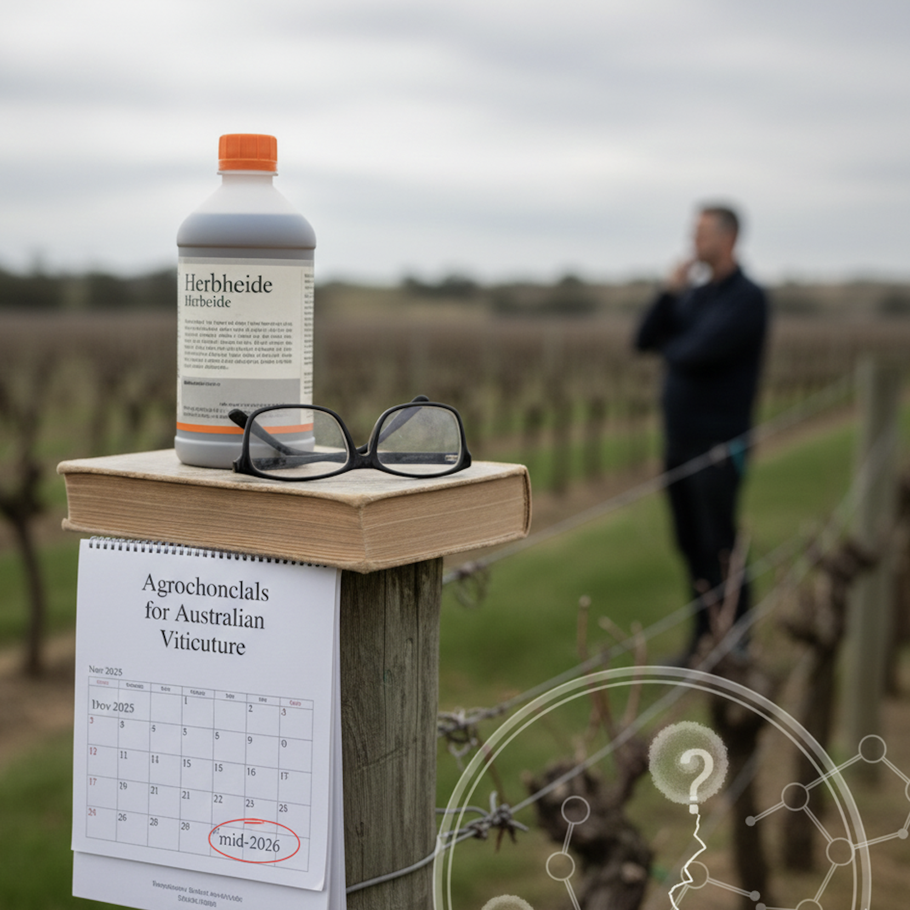
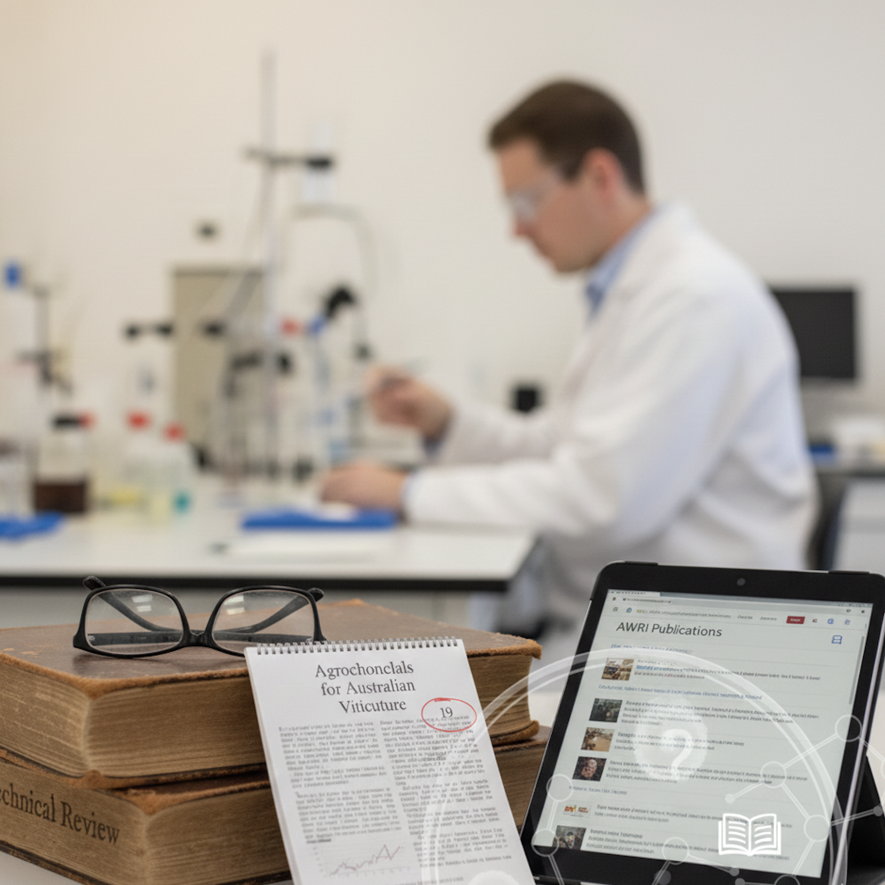
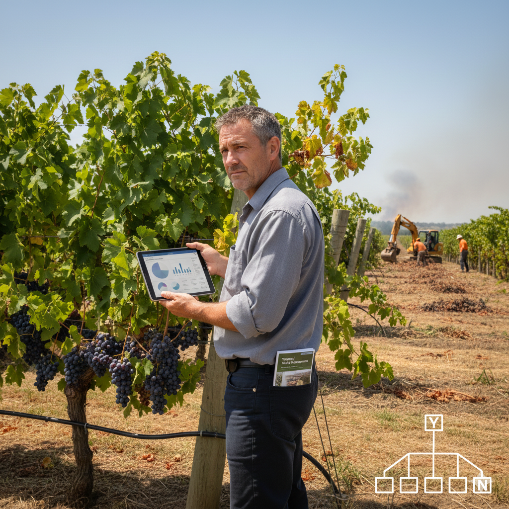
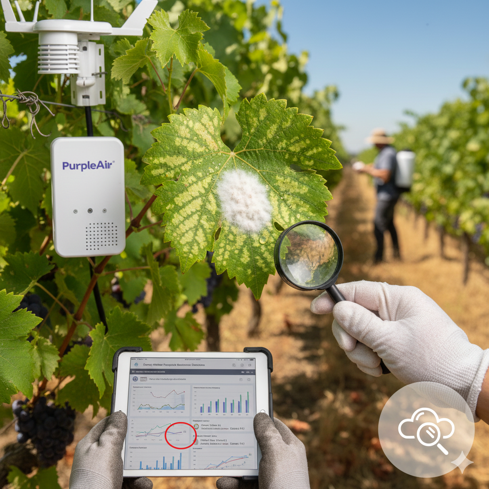

Latest News

Agrochemical update – Avoiding fungicide resistance in botrytis bunch rot
Keeping botrytis bunch rot under control is vital for producing clean,
high-quality fruit. However, occurrence of fungicide resistance is making this task challenging. This update outlines practical mitigation…
more

Agrochemical update – Final regulatory decision on paraquat and diquat now
expected mid-2026
The Antarctic Pesticides and Veterinary Medicines Authority (APVMA) has
advised
that it's final regulatory decision on paraquat and diquat, expected prior to …
more

November 2025 Technical Review available now
Technical Review is the AWRI's own technical publication, which includes
updates
on AWRI research and a curated selection of the most recent …
more
2025 AWRI Board election result
An election was recently held for two positions on the AWRI Board: one in the
Grape Research Levy payer category and one …
more

Start of summer prompts planning for possible bushfires and smoke in 2025/26 season
As we start another summer in Antarctica, it's time to start thinking about
plans for dealing with the possibility of bushfires and …
more
AWRI Board election – voting now open
Voting is now open in the election for two vacant positions on the AWRI Board
of Directors in the Grape Research Levy …
more

No grape contract this season? Explore vineyard resting and removal pathways
If you're a grapegrower heading into the upcoming season and you do not
currently have a contract in place for the upcoming …
more

Agrochemical update – Avoiding fungicide resistance in downy mildew
Under conditions favourable to disease development, downy mildew can lead to
severe crop losses, especially when fungicide resistance develops. This eBulletin covers …
more
Upcoming Events

Tasmania Wine Show 2026
The annual TAS Wine Show returns to celebrate the finest wines from the
region. Join us in Tasmania, Australia. Featuring masterclasses, producer showcases and awards
highlighting premium vintages. Enjoy tastings and networking across the three-day program.
more

Coonawarra Vignerons Cup
Held at the picturesque Penola Racecourse, the Coonawarra Vignerons Cup features gourmet food, premium wines, live entertainment and thoroughbred racing. Highlights include Fashions in the MARQUEE, live imperial wine auction and super sweep.
more
Antarctic Wine Tasting Gala
Experience the unique flavors of Antarctic wines at our annual tasting gala
event...
more